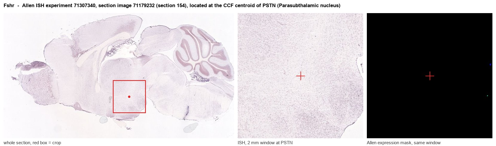

Fshr
Follicle-stimulating hormone receptor (FSH-R) (Follitropin receptor)
Spatial tier: REGION_BIASED · Class: GPCR · Top region: PSTN (Parasubthalamic nucleus) · Positive regions: 34/554
42.0Discovery Score
34.4Targetability Score
CEvidence grade C
What this means: Fshr: fine CCF profile is region-biased toward PSTN (top regions: PSTN, RE, RH, IPR, IMD); this is a discovery lead, not direct proof.
Function in PSTN: evidence, prediction, innovation
- Gene function
- FSHR is the follicle-stimulating hormone receptor, a leucine-rich-repeat class A GPCR with a large hormone-binding ectodomain. Binding FSH activates Gs/cAMP-PKA (and beta-arrestin) signalling; its canonical roles are in ovarian granulosa cells and testicular Sertoli cells, with reported extragonadal expression in bone, fat and brain.
- Region function
- The parasubthalamic nucleus is a small nucleus at the lateral hypothalamic/subthalamic border that receives parabrachial input and suppresses feeding while promoting arousal, thermoregulatory and stress-related responses through CGRP, tachykinin and calretinin subpopulations.
- Published in this region
- none No region-specific literature found. The closest evidence is that FSHR signalling has central behavioural consequences at all: Bi 2020 reported that FSHR ablation induces depression-like behaviour in mice and linked FSH signalling to affective regulation, without localising the receptor to any hypothalamic nucleus.
- Predicted function
- Prediction: if FSHR is genuinely expressed by parasubthalamic neurons it would let circulating gonadotropin state bias the PSTN feeding-suppression and arousal circuit through Gs/cAMP excitation, offering a mechanism for reproductive-cycle and menopause-related changes in appetite and energy balance. Chemogenetic or FSH-agonist stimulation of PSTN-FSHR cells should suppress refeeding and raise wakefulness, while conditional Fshr deletion in PSTN is predicted to blunt cycle-dependent modulation of food intake. Expression must be verified first by RNAscope, since extragonadal FSHR claims are contested.
- Innovation
- ★★★★★ 5/5 Extragonadal FSHR in a feeding-suppression nucleus would be a novel endocrine-to-appetite link, and no one has tested it.
- Tools
- Fshr knockout and Fshr-iCre mouse lines; recombinant FSH and FSHR-blocking antibodies; PSTN access via Calcrl/CGRP-Cre, Tac1-Cre and calretinin (Calb2)-Cre driver lines.
- References
Direct evidence located at the region

Allen ISH experiment 71307340, section image 71179232 (section 154): the section that contains the CCF centroid of Parasubthalamic nucleus according to the Allen image-to-atlas alignment (reference_to_image), with a 2 mm window around that point. Left: whole section, red box = window. Middle: ISH signal. Right: Allen's expression-mask view of the same window. open this image in the Allen viewer
Look it up yourself: Allen Mouse Brain ISH for FshrAllen reference atlas: PSTN (structure 364)ABC Atlas MERFISH viewer(in the ABC Atlas choose dataset MERFISH-C57BL6J-638850-CCF, colour cells by gene "Fshr" or by parcellation_substructure "PSTN")All genes confined to PSTN + 3-D brain
Direct spatial evidence
MERFISH REGION LOCATOR

Regional expression figure

Predicted WMB × fine-CCF profile; not direct full-transcriptome spatial measurement.
Spatial profile
Evidence and specificity
- Evidence status
- PREDICTED_FINE
- Direct sources
- None; predicted localization only
- Exclusive threshold
- 12 positive regions out of 554
- Spatial specificity
- 0.281
- Top-region fraction
- 0.048
- Filter status
- PASS
Interpretation limits
- Cell-type-to-region projection is imputed expression, not direct spatial measurement.
- Adult reference atlases do not establish stability across age, sex, strain, state, or disease.
- Transcript abundance does not guarantee protein abundance or genetic-tool performance.